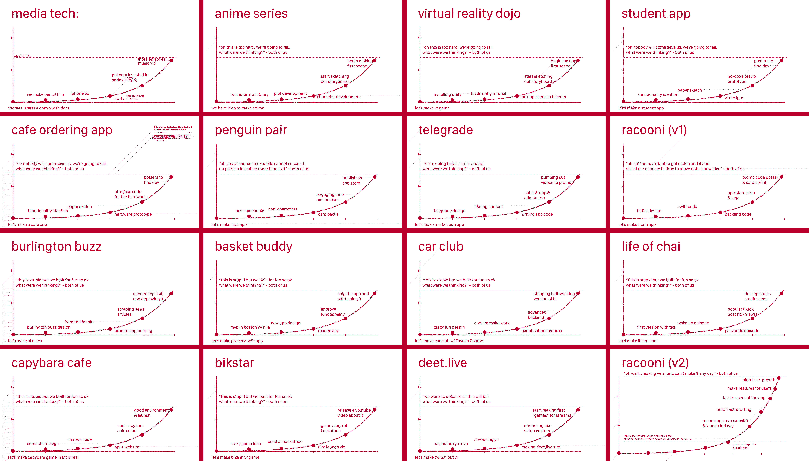

Home / Desktop-Launch-Analysis-Convos
We launched the desktop version of Kōdan. We made a website for it & made it live. It was around this time that our time in Japan was coming to an end. Dieter's sister arrived and he soon left to go adventure Osaka & Kyoto (this was the plan from Day 1, no surprise to either of us ofc). I stayed in Saitama (as planned). I was originally going to go on a solo hike for a week, but instead I stayed in Saitama to code & add some new features to Kōdan desktop (I made a compose feature that lets the user use their local Llama to generate story frames). I also took the time to think back on the past and decide where we should go with the future. I made these slides of past projects.

I came to the conclusion that the problem with every project that Dieter and I have worked on is this phenomenon that I call the dotted line of death. It's basically the point where we stop progressing it. I came to the conclusion that our quality of ideas is flat (constant), but the amount of time we dedicate to a project determines its outcome (atomic habits, just making it 1% better each day leads to a lot of growth over time).
My mindset was that we just needed to keep making Kōdan better, and that one day people will want it & it will look like over-night success when in reality it would have been months of dedication to adding small things to the tool that help it get closer to that vision for any person who wants to make their own anime being able to do it.
I talked to a mentor of mine who I respect deeply (I will leave them unnamed), and we had a really good conversation. It was really helpful to get an outside opinion when for the past two months, I've only really talked to myself & to Dieter. My mentor asked one important question: "If Racooni had 1400 users, do you think things would be different?" (for context Racooni is a past project that had 140 users) to which I respond: "yes definitely!". They said: "well that's your answer" (to the internal debate I had been having of whether I am indulging in sunk cost fallacy or just giving up too soon). They suggested that every day I should focus on answering the question of how to make something useful to people. If it's useful to people, then it can sustain life and become a startup. If it's not useful, nobody will use it. Rapid growth comes from something useful. You can measure utility by a few factors, but one objective one is user count. Our user count for Kōdan is about 30 or so. Despite our efforts to push it out, it isn't really useful to anyone. People aren't really interested in the concept (well executed or not). That's a hard reality.
well... that's where I am now. I have a couple days left in Japan. As I am typing this, I am at Starbucks for the final time with just a couple hours left. Another piece of advice that my mentor gave is to surround myself by people who are better than me in ways I want to improve (a better founder who is making a product I like, a better programmer, a better designer, someone more scrappy, etc).
My challenge is to figure out how to be useful. If I can figure that out... I can overcome the dotted line of death.